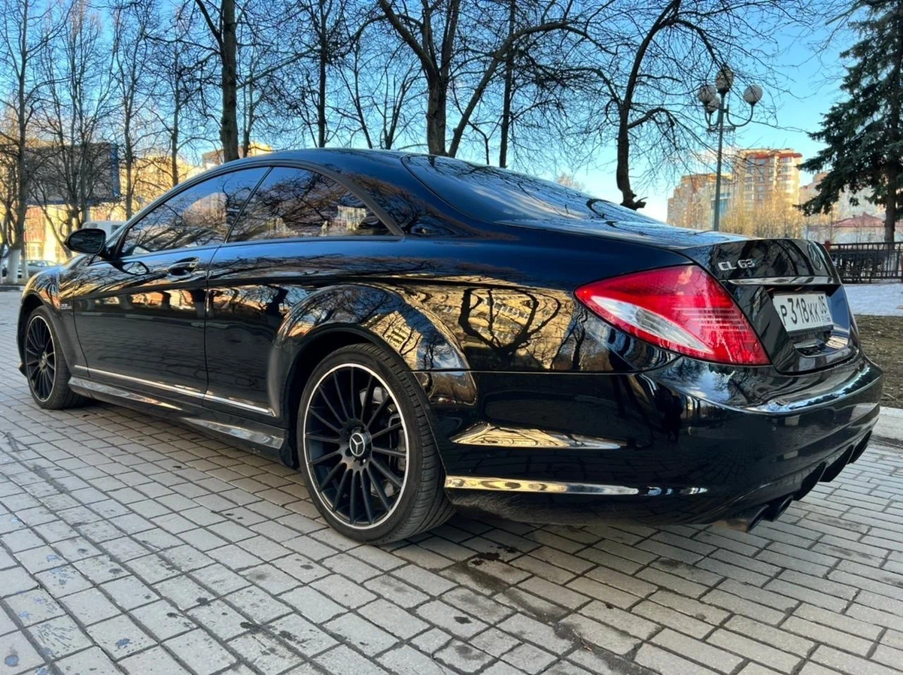
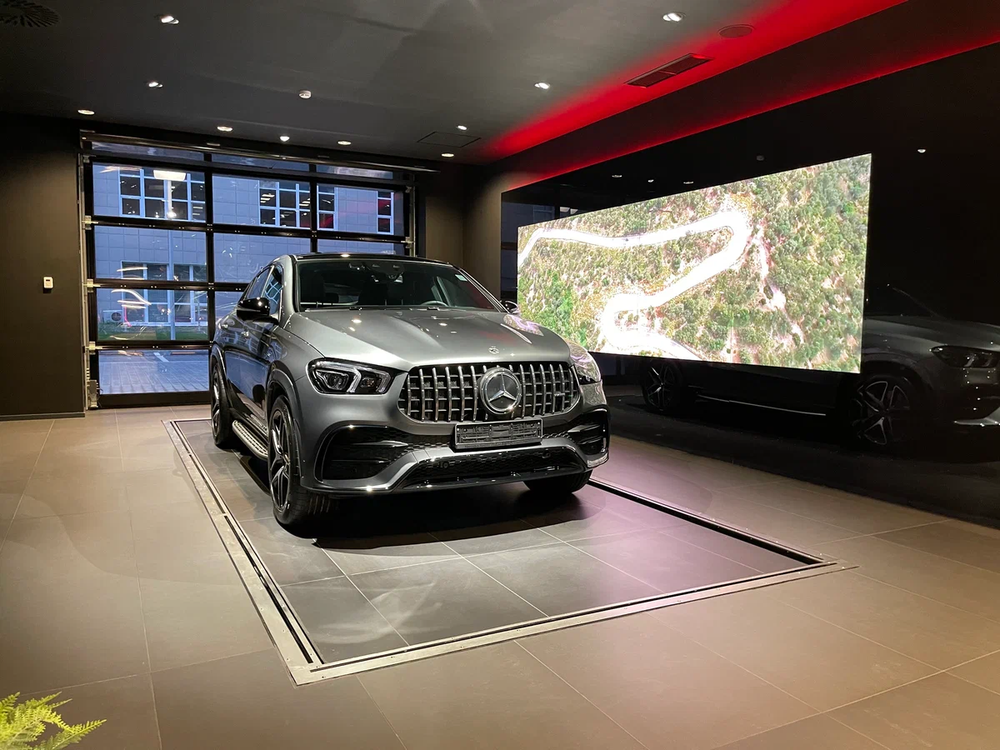
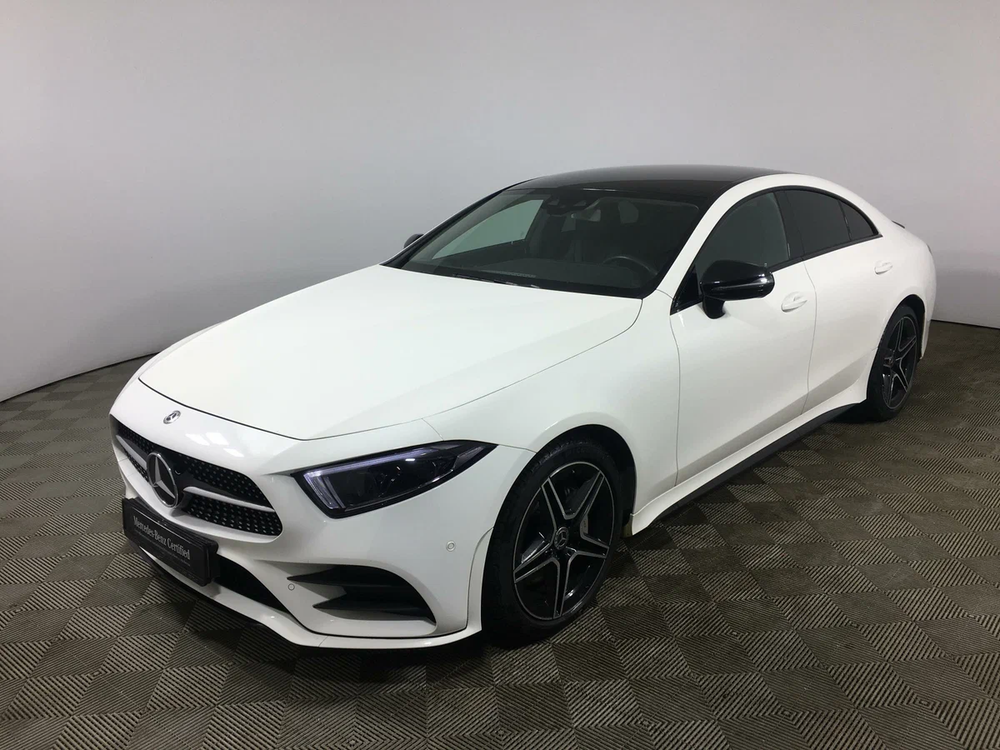
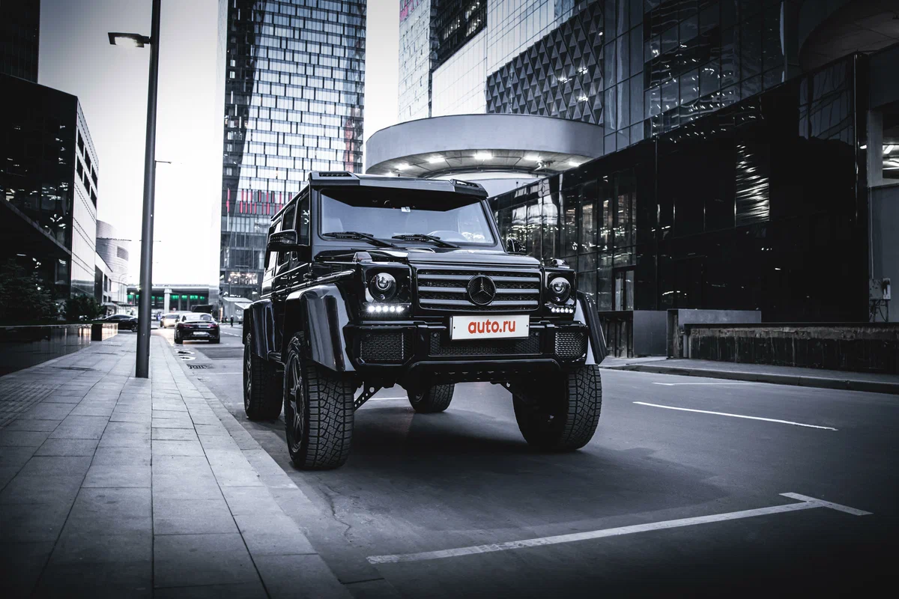
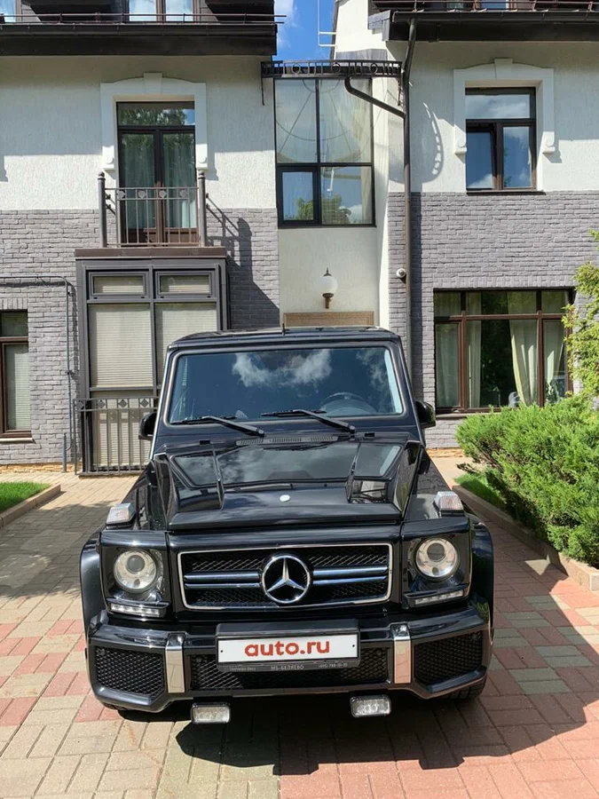
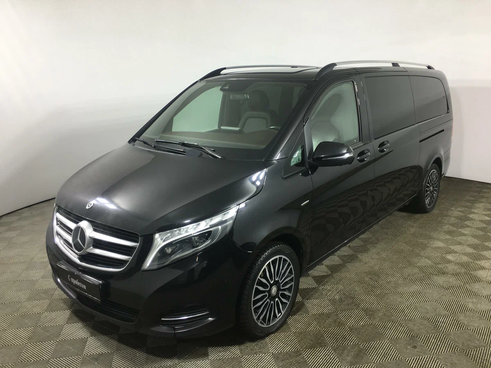
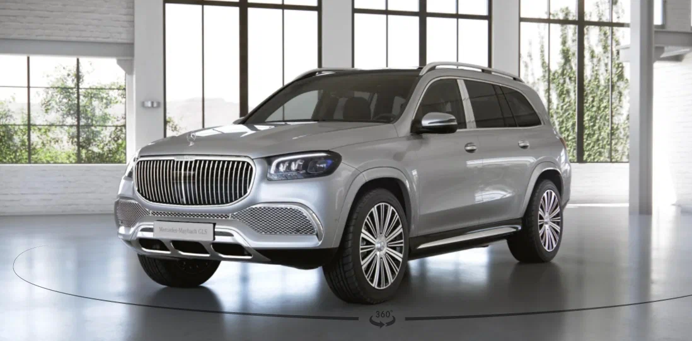

Легковые автомобили Mercedes-Benz официальный сайт - новые автомобили и с пробегом, цены, характеристики, условия покупки и аренды. АО "Мерседес-Бенц РУС"
1 СТРАНИЦАMercedes-Benz CL-Класс AMG 63 AMG II (C216)
- Год выпуска 2008
- Пробег 168 500 км
- Кузов Купе-хардтоп
- Цвет Чёрный
- Двигатель 6.2 л / 525 л.с. / Бензин
- Комплектация 80 опций
- Налог 78 750 ₽ / год
- Коробка Автоматическая
- Привод-Задний
- Руль-Левый
- Состояние-Не требует ремонта
- Владельцы 3 или более
- ПТС Дубликат
- Таможня Растаможен
- Госномер ******|05
- VIN WDD**************
Mercedes-Benz GLE Coupe AMG 53 AMG II (C167)
- Год выпуска 2021
- Пробег 14 700 км
- Кузов Внедорожник 5 дв.
- Цвет Серый
- Двигатель 3.0 л / 435 л.с. / Бензин
- Налог 65 250 ₽ / год
- Коробка Автоматическая
- Привод Полный
- Руль Левый
- Состояние Не требует ремонта
- Владельцы 1 владелец
- ПТС Оригинал
- Таможня Растаможен
- VIN W1N**************
- Госномер ******|799
Mercedes-Benz CLS 350 d III (C257)
- Год выпуска-2019
- Пробег-55 781 км
- Кузов Седан
- Цвет Белый
- Двигатель 2.9 л / 249 л.с. / Дизель
- Комплектация 26 опций
- Налог 18 675 ₽ / год
- Коробка-Автоматическая
- Привод-Полный
- Руль-Левый
- Состояние Не требует ремонта
- Владельцы-2 владелец
- ПТС-Оригинал
- Таможня-Растаможен
- Обмен-Рассмотрю варианты
- VIN WDD**************
Mercedes-Benz G-Класс 500 4x4 II (W463) Рестайлинг 4
- Год выпуска-2015
- Пробег-51000 км
- Кузов-Седан
- Цвет Черный
- Двигатель-3.0 л / 333 л.с. / Бензин
- Налог-49 950 ₽ / год
- Коробка-Автоматическая
- Привод-Полный
- Руль-Левый
- Состояние-Не требует ремонта
- Владельцы-3 или более
- ПТС-Оригинал
- Таможня-Растаможен
- Обмен-Рассмотрю варианты
- VIN-WDD**************
- Госномер-******|790
Mercedes-Benz G-Класс AMG 55 AMG I (W463) Рестайлинг
- Кузов-Седан
- Комплектация-S 350 d 4MATIC LUXURY
- Двигатель-2.9 л / 249 л.с. / дизель
- Налог-18 675 ₽ / год
- Коробка-Автоматическая
- Привод-Полный
- Цвет-Чёрный
Mercedes-Benz V-Класс XL 250 d экстра длинный II
- Год выпуска-2016
- Пробег-11 000 км
- Кузов-Внедорожник 5 дв.
- Цвет-черный
- Двигатель 4.0 л / 422 л.с. / Бензин
- Налог 63 300 ₽ / год
- Коробка-Автоматическая
- Привод-Полный
- Руль-Левый
- Состояние-Не требует ремонта
- Владельцы-1 владельца
- ПТС-Оригинал
- Владение 6 лет
- Таможня-Растаможен
- VIN WDB**************
- Госномер ******|799
Mercedes-Benz Maybach GLS 600 I
- Год выпуска-2017
- Пробег-49 000 км
- Кузов-Седан
- Цвет-Чёрный
- Двигатель-4.0 л / 469 л.с. / Бензин
- Комплектация-S 560 4MATIC
- Коробка-Автоматическая
- Привод-Полный
- Руль-Левый
- Состояние-Не требует ремонта
- Владельцы-3 или более
- ПТС-Оригинал
- Владение-4 года и 4 месяца
- Таможня-Растаможен
- VIN-WDD**************
- Госномер-******|799